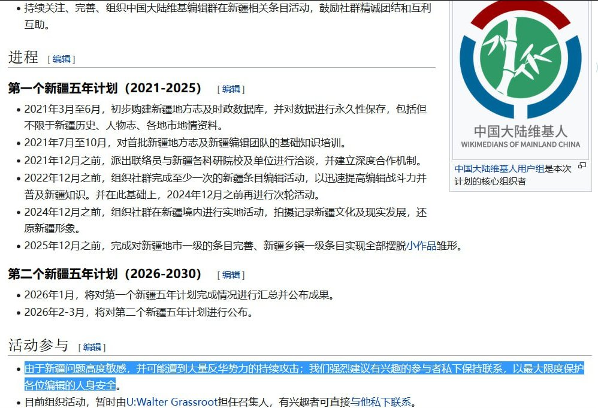

果酱离歌🏳️⚧️
@JamFarewellSong
RT @Lslymlwxc: 有消息称，被维基媒体基金会永久剥夺维基百科编辑权的中国大陆维基人用户组（WMC）成员之一裴璇宇，常用网名游魂 @Kdouls @Nekohamoukyuu，因呼吸道衰竭抢救无效并于近日逝世。…

谁将十万横扫三江
@Lslymlwxc
有消息称，被维基媒体基金会永久剥夺维基百科编辑权的中国大陆维基人用户组（WMC）成员之一裴璇宇，常用网名游魂 @Kdouls @Nekohamoukyuu，因呼吸道衰竭抢救无效并于近日逝世。 https://t.co/pW5G72Wyif https://t.co/IRQssXoWB6